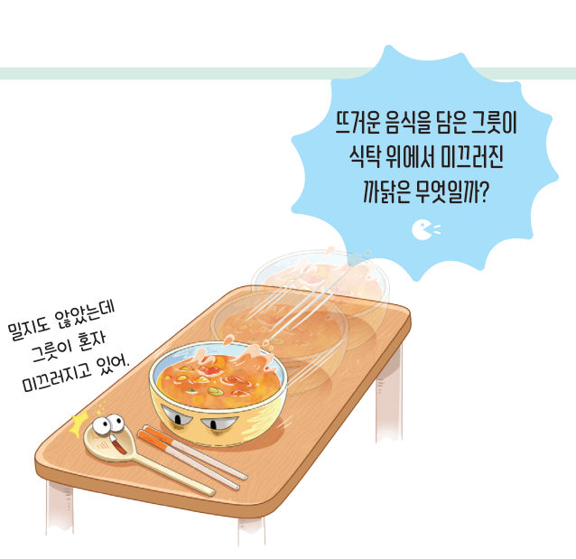
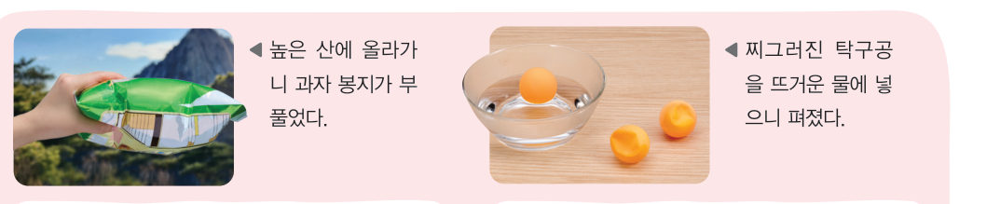
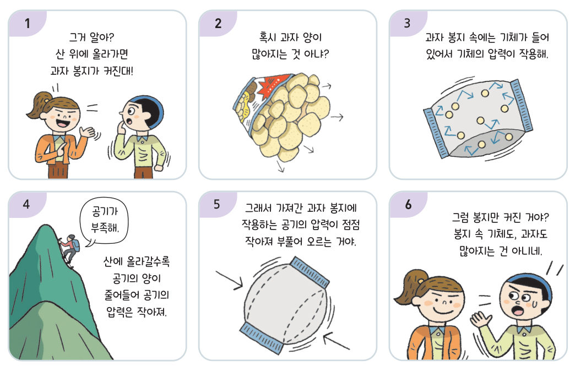
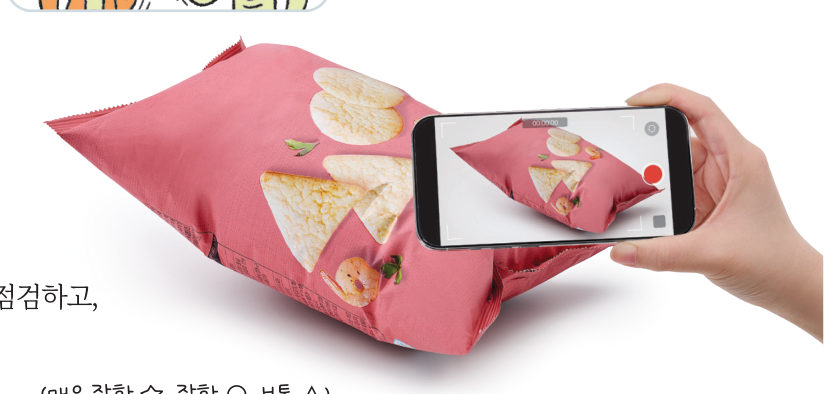

살아있는 교과서 · Ⅵ. 기체의 성질 · 2. 기체의 압력 및 온도와 부피 관계 · 03 214~216쪽 · 대단원 마무리
기체의 부피 변화 예
기체의 부피 변화 예
조사하기
“밀지도 않았는데 그릇이 혼자 미끄러지고 있어.” 뜨거운 음식을 담은 그릇은 왜 식탁 위에서 미끄러질까? 우리 주변에서 기체의 부피가 변하는 예를 찾아 원리를 설명하고, 물 뿜는 인형의 비밀을 풀어 보자.
🎯 이 탐구를 수행하면 — 우리 주변에서 기체의 부피가 변하는 예를 찾고, 그 원리를 설명하는 동영상을 만들어 발표할 수 있다.
탐구 1우리 주변의 기체 부피 변화 현상 214쪽
각 현상이 일어난 원인이 기체의 압력과 부피 관계인지, 기체의 온도와 부피 관계인지 골라 보자.

| 현상 | 원인 |
|---|---|
| ① 높은 산에 올라가니 과자 봉지가 부풀었다. | |
| ② 찌그러진 탁구공을 뜨거운 물에 넣으니 펴졌다. | |
| ③ 뜨거운 음식을 담은 그릇이 식탁 위에서 혼자 미끄러졌다. | |
| ④ 잠수부가 내뿜은 공기 방울은 수면으로 올라갈수록 커진다. | |
| ⑤ 추운 겨울에는 자동차 타이어의 공기가 빠진 것처럼 보인다. | |
| ⑥ 공기 주머니가 있는 운동화를 신고 걸으면 주머니가 납작해진다. | |
| ⑦ 열기구 속 공기를 데우면 공기가 부풀어 열기구가 떠오른다. |
가상 실험과자 봉지 들고 산에 오르기 · 탁구공 데우기
왼쪽: 산의 높이를 올려 보자. 위로 갈수록 공기의 양이 줄어 바깥 공기의 압력이 작아져요. 오른쪽: 찌그러진 탁구공을 담근 물의 온도를 올려 보자.
1백두산(약 2744 m) 꼭대기에서 과자 봉지 속 기체의 부피는 땅에서보다 . 탁구공을 담근 물의 온도가 높을수록 탁구공은 더 잘 .
탐구 2~6예를 찾고 동영상 스토리보드 만들기 214~215쪽
준비물 스마트 기기, 동영상 스토리보드(부록 268 쪽), 연필, 지우개
- 자료 수집 기체의 압력과 부피 관계 또는 기체의 온도와 부피 관계를 확인할 수 있거나 이용한 예를 각각 하나씩 찾고 그 원리를 이야기한다.
- 협력적 소통 과정 1이나 2의 예 중에서 한 가지를 선택하여 그 원리를 설명하는 동영상을 어떻게 만들지 이야기한다.
- 동영상 제작 과정에서 각 모둠 구성원이 맡은 역할을 표에 적는다.
- 각 장면에 대한 설명을 쓰거나 그림을 그려 스토리보드를 작성한다.
- 스토리보드에 맞춰 동영상을 만든다.
활동 도우미 · 동영상을 만드는 방법 동영상은 약 30 초 내외로 짧게 만든다. 동영상 편집 앱의 자막 기능을 이용하여 동영상의 내용을 풍부하게 만들 수도 있다.
2내가 찾은 예와 원리를 써 보자.
4모둠 구성원의 역할 (예: ○○○ — 소품 준비, 동영상 편집)

5우리 모둠의 스토리보드 — 장면마다 대사나 설명을 써 보자.
장면 1
장면 2
장면 3
장면 4
장면 5
장면 6

정리해 볼까동영상 발표와 점검 215쪽
모둠별로 완성한 동영상을 발표하고, 우리 모둠이 발표한 동영상을 다음 기준에 따라 점검해 보자. (매우 잘함 ☆, 잘함 ○, 보통 △)
| 우리 모둠 활동 체크리스트 | 확인 |
|---|---|
| 설명하려고 했던 원리를 잘 드러냈는가? | |
| 스토리보드의 내용을 잘 표현했는가? | |
| 모둠 구성원의 의견을 골고루 반영했는가? | |
| 모둠 구성원 모두가 적극적으로 참여했는가? |
2협력적 소통 보완할 수 있는 방법을 이야기해 보자.
다르게 해 보기 · 기체의 부피 변화와 관련된 그림 전시회 열기
① 기체의 부피가 변하는 예를 조사하고, 관련 현상에 대한 그림을 인터넷에서 수집한다. ② 그림을 인쇄하고 원리를 적는다. ③ 그림을 교실 벽면에 붙여 전시회를 개최한다. 정리 전시회를 관람하고 붙임 딱지에 소감을 적어 그림 아래에 붙여 보자.
🧩 두 번째 블록 · 힌트 조각 2 (215쪽)
찌그러진 탁구공을 뜨거운 물에 넣으면 펴지는 것처럼 물 뿜는 인형에 뜨거운 물을 부으면 인형 속 공기의 부피가 ( ).
가상 실험물 뿜는 인형의 비밀 — 두 블록 모으기
물 뿜는 인형에는 작은 구멍 하나만 있어요. 버튼을 차례대로 눌러 인형에 물을 넣고, 다시 물을 뿜게 해 보자. 인형 속 공기의 온도·부피·압력이 어떻게 변하는지 계기판을 보세요.
인형 속 공기의 온도-
인형 속 물의 양-
지금 일어나는 일-
1물이 인형 안으로 들어가는 단계는 이고, 물이 뿜어져 나오는 단계는 이다. ①에서 인형의 구멍으로 거품이 나오는 까닭은 인형 속 공기의 부피가 때문이다.
스스로 정리하기기체의 부피 변화 예 · 두 번째 블록 찾기 216쪽
3기체의 부피 변화 예
(1) 기체의 과 부피 관계 확인: 높은 산에 올라가니 과자 봉지가 부풀었다.
(2) 기체의 와 부피 관계 확인: 찌그러진 탁구공을 뜨거운 물에 넣으니 펴졌다.
(2) 기체의 와 부피 관계 확인: 찌그러진 탁구공을 뜨거운 물에 넣으니 펴졌다.
🧩 두 번째 블록 찾기 · 조각을 모아 답하기
물 뿜는 인형에서 물은 어떻게 들어갔다가 나오는 걸까?
조각 1 (213쪽) 물 뿜는 인형을 뜨거운 물에 넣으면 인형 속 공기의 부피가 늘어나고, 다시 찬물에 넣으면 공기의 부피가 줄어든다. · 조각 2 (215쪽) 물 뿜는 인형에 뜨거운 물을 부으면 인형 속 공기의 부피가 늘어난다.
대단원 마무리재미있고 신나는 풍선 놀이 틀 설계하기

풍선 놀이 틀은 풍선에 공기를 넣어 부풀린 것으로 강, 바다, 평지 등 여러 곳에 설치해 다양하게 활용한다. 먼저 풍선 놀이 틀을 설치할 장소를 정하고 풍선 놀이 틀의 설계도를 그린 다음, 놀이 방법과 안전 규칙이 포함된 안내판을 만들어 보자.
💭함께 발견하기 풍선 놀이 틀을 놀이 기구로 이용할 때의 장점을 기체의 압력과 관련지어 이야기해 보자.
1협력적 소통 우리 모둠이 풍선 놀이 틀을 설치할 장소와 놀이 방법
2새로운 풍선 놀이 틀의 설계도 설명 (모양, 크기, 공기를 넣는 곳 등 — 종이에 그린 설계도를 사진으로 찍어 선생님께 보내도 좋아요.)
3안내판에 들어갈 안전 규칙 — 기체의 압력과 부피 관계, 온도와 부피 관계를 한 가지 이상 활용해 보자.
스스로 평가Ⅵ. 기체의 성질 돌아보기 · 선생님께 한마디
| 평가 기준 | 스스로 평가 |
|---|---|
| 지식·이해 기체의 압력 및 온도와 부피 관계를 입자 운동으로 설명할 수 있는가? | |
| 과정·기능 기체의 압력 및 온도와 부피 관계를 해석할 수 있는가? | |
| 가치·태도 탐구 활동을 하면서 협업의 중요성을 느꼈는가? | |
| 풍선 놀이 틀을 설계하기 위해 조사한 내용을 기체의 압력과 연관 지을 수 있는가? | |
| 모둠 구성원들이 서로 협력하며 과제를 수행하였는가? |
💬활동을 수행하면서 알게 된 점, 어려웠던 점, 더 알아보고 싶은 점, 선생님께 하고 싶은 말을 써 주세요.
제출학생 정보 · 제출하기
모든 활동을 마친 뒤 제출하면 전체가 한 번에 채점되고 피드백이 나타나요. 답안은 선생님 스프레드시트(중1 탭)에 기록돼요.